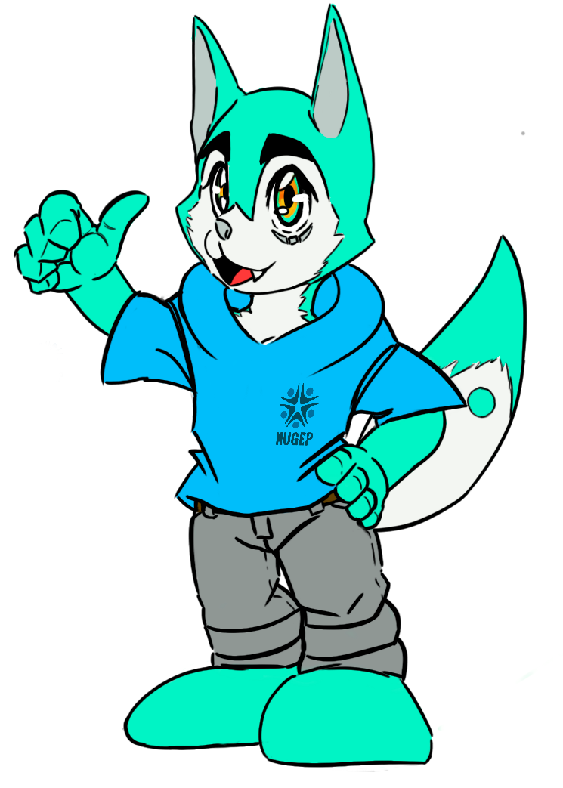

Mascote da NUGEP

Oi, Eu sou Akira, a mascote do Núcleo de Gestão de Pessoas, o NUGEP!
Meu nome vem do japonês, e carrega consigo o significado de claro, brilhante e iluminado. Não tenho esse nome apenas porquê vim trazer uma nova luz ao NUGEP, mas também porque Akira é de gênero neutro, sendo uma forma de representatividade!
Dizem que o fato de eu ser um lobo é perfeito para ser a mascote, afinal, minha espécie anda em matilha, precisando do apoio mútuo e da presença de líderes. Não é muito diferente de quando vocês humanos se juntam em grupos, não?
Nosso programa possui dois símbolos que fazem a nossa marca: a silhueta de uma pessoa, sendo visível em nossa logo e na minha cauda em forma de pelugem, reforçando o nosso principal objetivo e prioridade: As pessoas! Por fim, a imagem de um boomerang, que por coincidência é a forma da minha cicatriz debaixo do meu olho esquerdo. A ideia do Boomerang é ilustrar os vários ciclos que objeto toma em seu trajeto, representando evolução.